Localization (Translation)
In this section, you will learn how to translate your site into your native language. You will also learn how to transform your site into a multi-language site if you want.
First, this theme is ready for localization via .po/.mo files, and works with the WPML plugin. **Note – The WPML plugin is a premium plugin and IS NOT INCLUDED in this theme package. If you desire to use the WPML plugin, you must buy and install it yourself.
If you are not familiar with translating Wordpress themes, we highly recommend that you read this article: http://codex.wordpress.org/Translating_WordPress
WPML Configuration
This is the best configuration to operate wpml plugin:
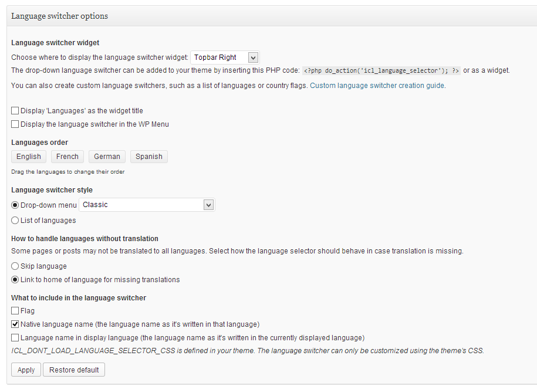
Now for the steps:
- First, check the values of your wp-config file. To do this, go to your theme folder (via Filezilla, Internet Explorer or your provider). Note here that the wp-config file is highlighted.
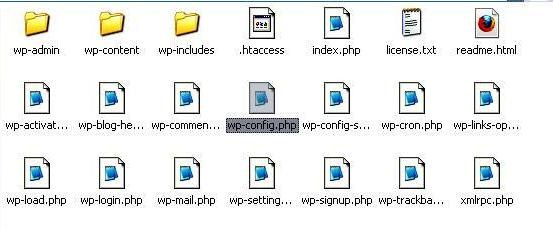
Drag the wp-config file to your desktop, then double-click to open it via Notepad. Here’s how it will look:
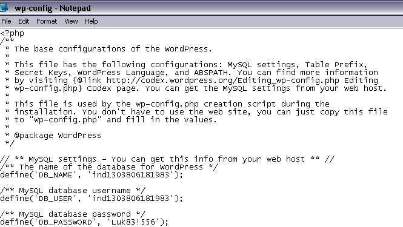
- Next, find the folder languages of the theme by following this path:
WP-Content>Themes>Bazar>Languages.
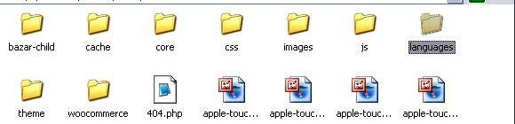
- Now double-click on Languages, and when the file opens, find the default.po file. Right click on it to copy it.
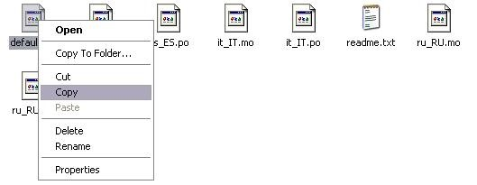
You won’t be able to paste the copied file in your ftp files, so go to your desktop, right-click and save the file there.
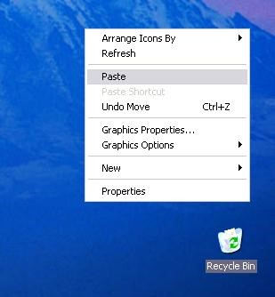
- Now rename your copy of default.po. For example, rename your file
- fr_FR.po for France,
- en_EN.po for English
- he_HE.po for hebraic, and so on.
Here’s how the renamed file will look:
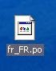
Now Download POEdit.
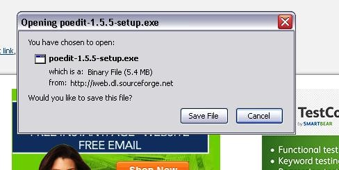
Notice that once you install PoEdit, your renamed file will change:
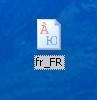
Now Open your renamed file with the POEdit software and translate it by going to File and clicking on Preferences.
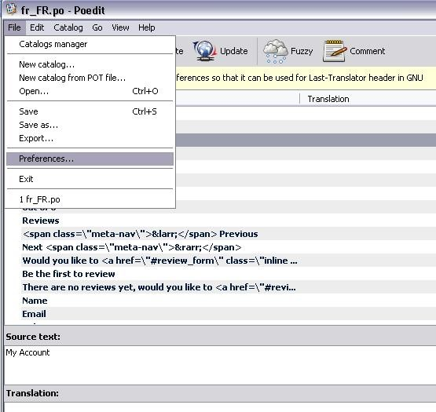
When your new screen opens, click on Editor, then click Automatically generate mo:
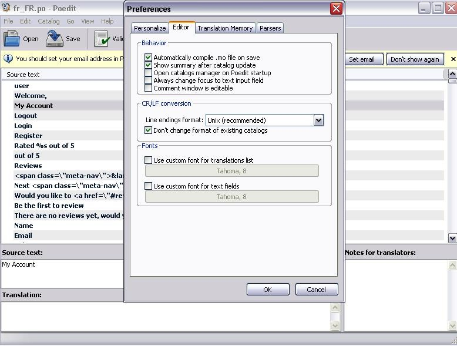
Be sure to save your translated file, then upload the new .mo and .po via FTP to your server, in the languages folder.